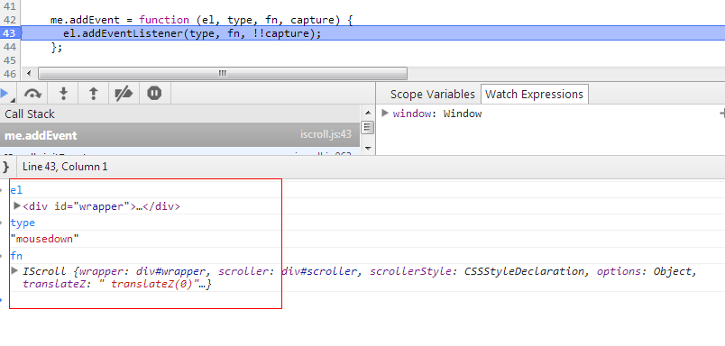

前言
想不到又到周末了，周末的时间要抓紧学习才行，前几天我们学习了iScroll几点基础知识：
今天我们来学习其事件机制以及滚动条的实现，完了后我们iScroll就学习的差不多了，最后会抽离iScroll的精华部分组成一个阉割版iScroll
并总结下iScroll的一些地方结束iScroll的学习，然后彻底扑向nodeJS了
iScroll事件机制
我们平时所说的事件机制其实应该分开，分成两块：
① DOM的事件相关
② 系统自建事件机制
在我们前端的页面里面，最重要的当然是交互，交互其实就是一个个事件的体现，所以任何前端库的核心一定是其事件，iScroll就是由三大事件串联整个流程
iScroll同样包括DOM事件以及自建事件，其中DOM事件便是浏览器的表现，而自建事件就是用户可以插一脚的地方了
DOM事件参数盲点
iScroll DOM事件实现与可能让一些不熟悉javascript事件机制的同学大跌眼镜（在与Aaron讨论前，我其实也摸不着头脑）
简单来说，标准情况下我们这样实现事件注册
el.addEventListener(type, fn, capture)
其中的所有参数都没有问题，唯独第二个参数，为什么这么说呢？请看以下代码：
1 var eventObj = {}; 2 eventObj.a = 1; 3 document.addEventListener('click', eventObj)
各位觉得这个代码有问题吗？第二个参数显然不是一个函数，但是function也是object呢，其实这样也是javascript规范之一，不知道只是我们寡闻而已
这样写有以下好处，我们的作用域就是我们的对象：
var eventObj = {}; eventObj.a = 1; eventObj.handleEvent = function () { alert(this.a); } document.addEventListener('click', eventObj) //这个代码点击会弹出1
这个便是一个javascript规范，我们传入的对象如果具有handleEvent 函数，便会执行，如果没有，此次注册便无意义，这样绑定的话，作用域便指向了eventObj
iScroll DOM 事件
有了以上知识，再说回iScroll的DOM事件：
① 构造函数会执行_initEvents方法初始化事件，我们抽出我们关心的一块：
1 eventType(this.wrapper, 'touchstart', this); 2 eventType(target, 'touchmove', this); 3 eventType(target, 'touchcancel', this); 4 eventType(target, 'touchend', this);
var eventType = remove ? utils.removeEvent : utils.addEvent
这个代码其实就是调用的addEvent方法：
1 me.addEvent = function (el, type, fn, capture) { 2 el.addEventListener(type, fn, !!capture); 3 };
那么iScroll事件绑定的具体点便捕捉到了：

可以看到我们这里的fn是一个对象，但是不要担心，我们的具体的方法在此：
1 handleEvent: function (e) { 2 switch (e.type) { 3 case 'touchstart': 4 case 'MSPointerDown': 5 case 'mousedown': 6 this._start(e); 7 break; 8 case 'touchmove': 9 case 'MSPointerMove': 10 case 'mousemove': 11 this._move(e); 12 break; 13 case 'touchend': 14 case 'MSPointerUp': 15 case 'mouseup': 16 case 'touchcancel': 17 case 'MSPointerCancel': 18 case 'mousecancel': 19 this._end(e); 20 break; 21 case 'orientationchange': 22 case 'resize': 23 this._resize(); 24 break; 25 case 'transitionend': 26 case 'webkitTransitionEnd': 27 case 'oTransitionEnd': 28 case 'MSTransitionEnd': 29 this._transitionEnd(e); 30 break; 31 case 'wheel': 32 case 'DOMMouseScroll': 33 case 'mousewheel': 34 this._wheel(e); 35 break; 36 case 'keydown': 37 this._key(e); 38 break; 39 case 'click': 40 if (!e._constructed) { 41 e.preventDefault(); 42 e.stopPropagation(); 43 } 44 break; 45 } 46 }
高大帅哈，如此整个iScroll的DOM事件相关就没问题了，在具体就回到了上次的三大事件点了
自定义事件机制
其实在我们学习backbone时候我们就提到了这块操作
1 var Events = Backbone.Events = { 2 3 on: function (name, callback, context) { 4 if (!eventsApi(this, 'on', name, [callback, context]) || !callback) return this; 5 this._events || (this._events = {}); 6 var events = this._events[name] || (this._events[name] = []); 7 events.push({ callback: callback, context: context, ctx: context || this }); 8 return this; 9 }, 10 11 off: function (name, callback, context) { 12 var retain, ev, events, names, i, l, j, k; 13 if (!this._events || !eventsApi(this, 'off', name, [callback, context])) return this; 14 if (!name && !callback && !context) { 15 this._events = {}; 16 return this; 17 } 18 19 names = name ? [name] : _.keys(this._events); 20 for (i = 0, l = names.length; i < l; i++) { 21 name = names[i]; 22 if (events = this._events[name]) { 23 this._events[name] = retain = []; 24 if (callback || context) { 25 for (j = 0, k = events.length; j < k; j++) { 26 ev = events[j]; 27 if ((callback && callback !== ev.callback && callback !== ev.callback._callback) || 28 (context && context !== ev.context)) { 29 retain.push(ev); 30 } 31 } 32 } 33 if (!retain.length) delete this._events[name]; 34 } 35 } 36 37 return this; 38 }, 39 40 trigger: function (name) { 41 if (!this._events) return this; 42 var args = slice.call(arguments, 1); 43 if (!eventsApi(this, 'trigger', name, args)) return this; 44 var events = this._events[name]; 45 var allEvents = this._events.all; 46 if (events) triggerEvents(events, args); 47 if (allEvents) triggerEvents(allEvents, arguments); 48 return this; 49 }, 50 }; 51 52 // Regular expression used to split event strings. 53 var eventSplitter = /\s+/; 54 55 // Implement fancy features of the Events API such as multiple event 56 // names `"change blur"` and jQuery-style event maps `{change: action}` 57 // in terms of the existing API. 58 var eventsApi = function (obj, action, name, rest) { 59 if (!name) return true; 60 61 // Handle event maps. 62 if (typeof name === 'object') { 63 for (var key in name) { 64 obj[action].apply(obj, [key, name[key]].concat(rest)); 65 } 66 return false; 67 } 68 69 // Handle space separated event names. 70 if (eventSplitter.test(name)) { 71 var names = name.split(eventSplitter); 72 for (var i = 0, l = names.length; i < l; i++) { 73 obj[action].apply(obj, [names[i]].concat(rest)); 74 } 75 return false; 76 } 77 78 return true; 79 };
所谓自建事件机制，其实是唬人的，就是用一个数组保存各个阶段的函数，到特定阶段执行便可，iScroll这块做的尤其简单，而且又注册没有注销：
1 on: function (type, fn) { 2 if (!this._events[type]) { 3 this._events[type] = []; 4 } 5 6 this._events[type].push(fn); 7 }, 8 9 _execEvent: function (type) { 10 if (!this._events[type]) { 11 return; 12 } 13 14 var i = 0, 15 l = this._events[type].length; 16 17 if (!l) { 18 return; 19 } 20 21 for (; i < l; i++) { 22 this._events[type][i].call(this); 23 } 24 },
iScroll在构造函数中定义了_events这一对象，然后便可以开开心心使用on注册各种各样的事件了，其中每种事件对象是一个数组
定义好好，在特定阶段，比如touchstart阶段，便开开有没有注册相关事件，注册了便执行一发即可：
this._execEvent('scrollEnd');
这里要注意的是，他的this执行为iScroll，那么就可以使用很多有用的属性了
至此，iScroll事件机制一块我们便分析结束了，接下来来简单看看我们关心的滚动条的实现
这里需要注意的一点是，这种实现的好处其实一个是方便在各个阶段注册、触发相关事件，主要缘由还是便于放出接口给外部调用
滚动条的实现
其实到这里，我们队iScroll的解析都七七八八了，这里我不得不说，iScroll虽然动画感受做的好以外，还是可能导致一些问题
iScroll本身没什么问题，问题出在各种各样的浏览器中，据我读代码的感受以及平时工作中遇到的问题，我相信项目中使用iScroll的朋友有可能
当然，这些问题出现在手机中：
① 当滑动碰到input可能出现滑动不顺的问题
② 滑动时候具有input时候滑动顺畅的话，input获取焦点不易
③ 点击时候可能出现问题（可能不能点击，可能双次点击）
④ 当你在ios点击时候碰到alert类似的东西，再点其它地方事件可能会重复触发
⑤ ......
当然以上问题只是我的猜测，是否真会导致问题还得经过验证，请各位不要搭理我，如果真有类似问题，获取其它问题请留言
上面扯了那么多也没有什么意义，我们现在还是来看滚动条的实现吧：
滚动条
iScroll为滚动条单独搞了一个类出来，因为在iScroll里面的滚动条是一等公民，具有以下特性：
① 鼠标中间滚动
② 可拖动滚动条
其实，多数时间以上功能可以取缔，尤其在手机上，其可点击区域还是过小，单独用于手机的话，鼠标中间也无意义
PS：iscroll使用键盘上下键也可以滚动，真的是大而全的功能啊，但是无意义......至少在移动端意义不大，去掉还可以节约1k的流量
1 function Indicator(scroller, options) { 2 this.wrapper = typeof options.el == 'string' ? document.querySelector(options.el) : options.el; 3 this.wrapperStyle = this.wrapper.style; 4 this.indicator = this.wrapper.children[0]; 5 this.indicatorStyle = this.indicator.style; 6 this.scroller = scroller; 7 8 this.options = { 9 listenX: true, 10 listenY: true, 11 interactive: false, 12 resize: true, 13 defaultScrollbars: false, 14 shrink: false, 15 fade: false, 16 speedRatioX: 0, 17 speedRatioY: 0 18 }; 19 20 for (var i in options) { 21 this.options[i] = options[i]; 22 } 23 24 this.sizeRatioX = 1; 25 this.sizeRatioY = 1; 26 this.maxPosX = 0; 27 this.maxPosY = 0; 28 29 if (this.options.interactive) { 30 if (!this.options.disableTouch) { 31 utils.addEvent(this.indicator, 'touchstart', this); 32 utils.addEvent(window, 'touchend', this); 33 } 34 if (!this.options.disablePointer) { 35 utils.addEvent(this.indicator, 'MSPointerDown', this); 36 utils.addEvent(window, 'MSPointerUp', this); 37 } 38 if (!this.options.disableMouse) { 39 utils.addEvent(this.indicator, 'mousedown', this); 40 utils.addEvent(window, 'mouseup', this); 41 } 42 } 43 44 if (this.options.fade) { 45 this.wrapperStyle[utils.style.transform] = this.scroller.translateZ; 46 this.wrapperStyle[utils.style.transitionDuration] = utils.isBadAndroid ? '0.001s' : '0ms'; 47 this.wrapperStyle.opacity = '0'; 48 } 49 }
设个就是滚动条的构造函数，这有一个关键点：
interactiveScrollbars: true
默认我们的滚动条是不会具有滚动等事件的，如果设置了此参数便具有可拖动特性了
1 if (this.options.interactive) { 2 if (!this.options.disableTouch) { 3 utils.addEvent(this.indicator, 'touchstart', this); 4 utils.addEvent(window, 'touchend', this); 5 } 6 if (!this.options.disablePointer) { 7 utils.addEvent(this.indicator, 'MSPointerDown', this); 8 utils.addEvent(window, 'MSPointerUp', this); 9 } 10 if (!this.options.disableMouse) { 11 utils.addEvent(this.indicator, 'mousedown', this); 12 utils.addEvent(window, 'mouseup', this); 13 } 14 }
这里虽然给滚动条绑定的事件，但是会一并操作我们的body主体，但是我们后面会直接忽略这步操作
1 if (this.options.fade) { 2 this.wrapperStyle[utils.style.transform] = this.scroller.translateZ; 3 this.wrapperStyle[utils.style.transitionDuration] = utils.isBadAndroid ? '0.001s' : '0ms'; 4 this.wrapperStyle.opacity = '0'; 5 }
然后，会给滚动条一个渐隐的效果，这个影响较小，直接使用了CSS3实现
下面继续实现了他的事件handleEvent


1 handleEvent: function (e) { 2 switch (e.type) { 3 case 'touchstart': 4 case 'MSPointerDown': 5 case 'mousedown': 6 this._start(e); 7 break; 8 case 'touchmove': 9 case 'MSPointerMove': 10 case 'mousemove': 11 this._move(e); 12 break; 13 case 'touchend': 14 case 'MSPointerUp': 15 case 'mouseup': 16 case 'touchcancel': 17 case 'MSPointerCancel': 18 case 'mousecancel': 19 this._end(e); 20 break; 21 } 22 }
接下来又是touch几个事件了：
1 _start: function (e) { 2 var point = e.touches ? e.touches[0] : e; 3 4 e.preventDefault(); 5 e.stopPropagation(); 6 7 this.transitionTime(); 8 9 this.initiated = true; 10 this.moved = false; 11 this.lastPointX = point.pageX; 12 this.lastPointY = point.pageY; 13 14 this.startTime = utils.getTime(); 15 16 if (!this.options.disableTouch) { 17 utils.addEvent(window, 'touchmove', this); 18 } 19 if (!this.options.disablePointer) { 20 utils.addEvent(window, 'MSPointerMove', this); 21 } 22 if (!this.options.disableMouse) { 23 utils.addEvent(window, 'mousemove', this); 24 } 25 26 this.scroller._execEvent('beforeScrollStart'); 27 }, 28 29 _move: function (e) { 30 var point = e.touches ? e.touches[0] : e, 31 deltaX, deltaY, 32 newX, newY, 33 timestamp = utils.getTime(); 34 35 if (!this.moved) { 36 this.scroller._execEvent('scrollStart'); 37 } 38 39 this.moved = true; 40 41 deltaX = point.pageX - this.lastPointX; 42 this.lastPointX = point.pageX; 43 44 deltaY = point.pageY - this.lastPointY; 45 this.lastPointY = point.pageY; 46 47 newX = this.x + deltaX; 48 newY = this.y + deltaY; 49 50 this._pos(newX, newY); 51 52 // INSERT POINT: indicator._move 53 54 e.preventDefault(); 55 e.stopPropagation(); 56 }, 57 58 _end: function (e) { 59 if (!this.initiated) { 60 return; 61 } 62 63 this.initiated = false; 64 65 e.preventDefault(); 66 e.stopPropagation(); 67 68 utils.removeEvent(window, 'touchmove', this); 69 utils.removeEvent(window, 'MSPointerMove', this); 70 utils.removeEvent(window, 'mousemove', this); 71 72 if (this.scroller.options.snap) { 73 var snap = this.scroller._nearestSnap(this.scroller.x, this.scroller.y); 74 75 var time = this.options.snapSpeed || Math.max( 76 Math.max( 77 Math.min(Math.abs(this.scroller.x - snap.x), 1000), 78 Math.min(Math.abs(this.scroller.y - snap.y), 1000) 79 ), 300); 80 81 if (this.scroller.x != snap.x || this.scroller.y != snap.y) { 82 this.scroller.directionX = 0; 83 this.scroller.directionY = 0; 84 this.scroller.currentPage = snap; 85 this.scroller.scrollTo(snap.x, snap.y, time, this.scroller.options.bounceEasing); 86 } 87 } 88 89 if (this.moved) { 90 this.scroller._execEvent('scrollEnd'); 91 } 92 },
这个地方由于我们后面不会实现便直接不予关注了
结语
突然来了几个BUG，等下要发布测试环境了，今天暂时到这里，我们下次继续好了，下次我们就直接分离iScroll了，抽出我们想要的功能